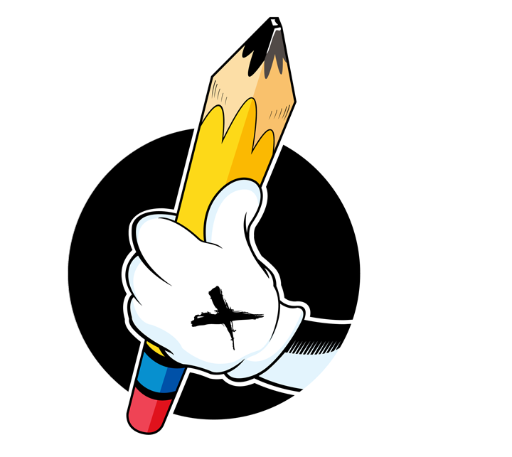

Listen
I learn what you are building, who it needs to reach and what the final work needs to accomplish.

I build bold visuals that help ideas feel clear, memorable and ready for the real world.
Explore The WorkStart A Project
Beerus struck me as a weird character. I wanted to see how I could draw this my way. I wanted to capture the calm confidence that makes him such an unforgettable character while pushing the lighting and color to create something bold.
Brand systems, original characters, illustration, apparel artwork and visual education all live under one roof.
Every project needs a clear path. This is how the work moves from conversation to something ready for the world.
I learn what you are building, who it needs to reach and what the final work needs to accomplish.
I research, sketch and test ideas until the strongest direction begins to take shape.
The selected idea is developed with attention to clarity, balance, color and the way it will be used.
You receive polished files prepared for the places where your brand or artwork needs to live.